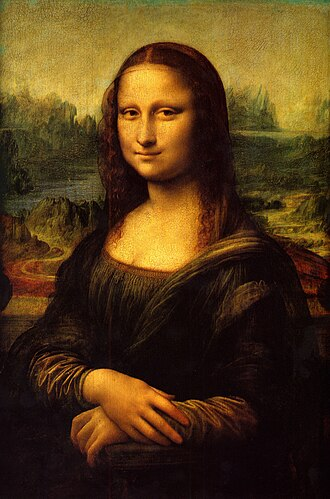
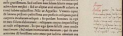
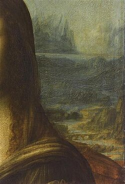
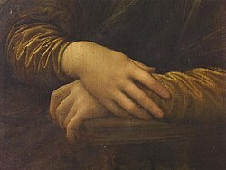
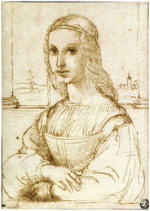
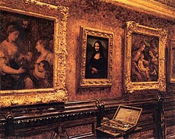
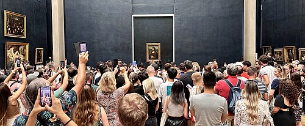
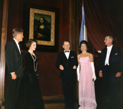

| Mona Lisa | |
|---|---|
| la Gioconda, Monna Lisa (Italian), la Joconde (French) | |
 | |
| Artist | Leonardo da Vinci |
| Year | c. 1503–1506, perhaps continuing until c. 1517 |
| Medium | Oil on poplar panel |
| Subject | Lisa del Giocondo |
| Dimensions | 77 cm × 53 cm (30 in × 21 in) |
| Location |
|
The Mona Lisa[a] is a half-length portrait painting by the Italian artist Leonardo da Vinci. Considered an archetypal masterpiece of the Italian Renaissance,[1][2] it has been described as "the best known, the most visited, the most written about, the most sung about, [and] the most parodied work of art in the world".[3] The painting's novel qualities include the subject's enigmatic expression,[4] the monumentality of the composition, the subtle modelling of forms, and the atmospheric illusionism.[5]
The painting has been traditionally considered to depict the Italian noblewoman Lisa del Giocondo.[6] It is painted in oil on a white poplar panel.[7] Leonardo never gave the painting to the Giocondo family.[8] It was believed to have been painted between 1503 and 1506; however, Leonardo may have continued working on it as late as 1517. King Francis I of France acquired the Mona Lisa after Leonardo's death in 1519, and it later became the property of the French Republic. It has normally been on display at the Louvre in Paris since 1797.[9]
The painting's global fame and popularity partly stem from its 1911 theft by Vincenzo Peruggia, who attributed his actions to Italian patriotism—a belief it should belong to Italy. The theft and subsequent recovery in 1914 generated unprecedented publicity for an art theft, and led to the publication of many cultural depictions such as the 1915 opera Mona Lisa, two early 1930s films (The Theft of the Mona Lisa and Arsène Lupin), and the song "Mona Lisa" recorded by Nat King Cole—one of the most successful songs of the 1950s.[10]
The Mona Lisa is one of the most valuable paintings in the world. It holds the Guinness World Record for the highest known painting insurance valuation in history at US$100 million in 1962,[11] equivalent to $1 billion as of 2023[update].[12]

The title of the painting, which is known in English as Mona Lisa, is based on the presumption that it depicts Lisa del Giocondo, although her likeness is uncertain. Renaissance art historian Giorgio Vasari wrote that "Leonardo undertook to paint, for Francesco del Giocondo, the portrait of Mona Lisa, his wife."[15][16][17] Monna in Italian is a polite form of address originating as ma donna—similar to Ma'am, Madam, or my lady in English. This became madonna, and its contraction monna. The title of the painting is spelled in Italian as Monna Lisa (mona being a vulgarity in Italian), which is rare in English,[18][19][20] where it is traditionally spelled Mona.[21]
Lisa del Giocondo was a member of the Gherardini family of Florence and Tuscany, and the wife of wealthy Florentine silk merchant Francesco del Giocondo.[22] The painting is thought to have been commissioned for their new home, and to celebrate the birth of their second son, Andrea.[23] The Italian name for the painting, La Gioconda, means "jocund" ("happy" or "jovial"), or literally "the jocund one", a pun on the feminine form of Lisa's married name, Giocondo.[22][24] In French, the title La Joconde has the same meaning.[21] Vasari's account of the Mona Lisa comes from his biography of Leonardo published in 1550, 31 years after the artist's death. It has long been the best-known source of information on the provenance of the work and identity of the sitter. Leonardo's assistant Salaì, at his death in 1524, owned a portrait which in his personal papers was named la Gioconda, a painting bequeathed to him by Leonardo.[25]
That Leonardo painted such a work, and its date, were confirmed in 2005 when a scholar at Heidelberg University discovered a marginal note in a 1477 printing of a volume by ancient Roman philosopher Cicero. Dated October 1503, the note was written by Leonardo's contemporary Agostino Vespucci. This note likens Leonardo to renowned Greek painter Apelles, who is mentioned in the text, and states that Leonardo was at that time working on a painting of Lisa del Giocondo.[26] In response to the announcement of the discovery of this document, Vincent Delieuvin, the Louvre representative, stated "Leonardo da Vinci was painting, in 1503, the portrait of a Florentine lady by the name of Lisa del Giocondo. About this we are now certain. Unfortunately, we cannot be absolutely certain that this portrait of Lisa del Giocondo is the painting of the Louvre."[27]
The catalogue raisonné Leonardo da Vinci (2019) confirms that the painting probably depicts Lisa del Giocondo, with Isabella d'Este being the only plausible alternative.[28] Scholars have developed several alternative views, arguing that Lisa del Giocondo was the subject of a different portrait, and identifying at least four other paintings referred to by Vasari as the Mona Lisa.[29] Several other people have been proposed as the subject of the painting,[30] including Isabella of Aragon,[31] Cecilia Gallerani,[32] Costanza d'Avalos, Duchess of Francavilla,[30] Pacifica Brandano/Brandino, Isabella Gualanda, Caterina Sforza, Bianca Giovanna Sforza, Salaì, and even Leonardo himself.[33][34][35] Psychoanalyst Sigmund Freud theorized that Leonardo imparted an approving smile from his mother,[36][37] Caterina, onto the Mona Lisa and other works like The Baptism of Christ, Virgin of the Rocks, and The Virgin and Child with Saint Anne.[38][39][37]

The Mona Lisa bears a strong resemblance to many Renaissance depictions of the Virgin Mary, who was at that time seen as an ideal for womanhood.[40] The woman sits markedly upright in a pozzetto armchair with her arms folded, a sign of her reserved posture. Her gaze is fixed on the observer. The woman appears alive to an unusual extent, which Leonardo achieved by his method of not drawing outlines. The soft blending (sfumato) creates an ambiguous mood "mainly in two features: the corners of the mouth, and the corners of the eyes".[41]
The depiction of the sitter in three-quarter profile is similar to late 15th-century works by Lorenzo di Credi and Agnolo di Domenico del Mazziere.[40] Frank Zöllner notes that the sitter's general position can be traced back to Flemish models and that "in particular the vertical slices of columns at both sides of the panel had precedents in Flemish portraiture."[42] Woods-Marsden cites Hans Memling's portrait of Benedetto Portinari (1487) or Italian imitations such as Sebastiano Mainardi's pendant portraits for the use of a loggia, which has the effect of mediating between the sitter and the distant landscape, a feature missing from Leonardo's earlier portrait of Ginevra de' Benci.[43]

The painting was one of the first Italian portraits to depict the sitter in front of an imaginary landscape,[45] although some scholars favour a realistic description,[46] and Leonardo was one of the first painters to use aerial perspective.[47] The enigmatic woman is portrayed seated in what appears to be an open loggia with dark pillar bases on either side. Behind her, a vast landscape recedes to icy mountains,[b] winding paths and a distant bridge, giving only the slightest indications of human presence. Leonardo chose to place the horizon line not at the neck, as he did with Ginevra de' Benci, but on a level with the eyes, thus linking the figure with the landscape and emphasizing the mysterious nature of the painting.[43] The bridge in the background was identified by Silvano Vincenti as the four-arched Romito di Laterina bridge from Etruscan-Roman times near Laterina, Arezzo, over the Arno river.[48] Other bridges with similar arches suggested as possible locations had more arches.[48] Some observers find similarities with the Azzone Visconti Bridge.[46]
Mona Lisa has no clearly visible eyebrows or eyelashes, although Vasari describes the eyebrows in detail.[49][c] In 2007, French engineer Pascal Cotte announced that his ultra-high resolution scans of the painting provide evidence that Mona Lisa was originally painted with eyelashes and eyebrows but that these had gradually disappeared over time, perhaps as a result of overcleaning.[52] Cotte discovered that the painting had been reworked several times, with changes made to the size of the face and the direction of gaze. He also found that in one layer the subject was depicted wearing numerous hairpins and a headdress adorned with pearls which was later scrubbed out and overpainted.[53]
There has been much speculation regarding the painting's sitter and landscape background. For example, Leonardo probably painted his sitter's appearance faithfully since her beauty is not seen as being among the best, "even when measured by late quattrocento (15th century) or even twenty-first century standards."[54] Some historians in Eastern art, such as Yukio Yashiro, argue that the landscape in the background of the picture was influenced by Chinese paintings;[55] this thesis has been contested for lack of clear evidence.[55]
Research in 2003 by Professor Margaret Livingstone of Harvard University said that Mona Lisa's smile disappears when observed with direct vision, known as foveal. Because of the way the human eye processes visual information, it is less suited to pick up shadows directly; however, peripheral vision can pick up shadows well.[56] Research in 2008 by a geomorphology professor at Urbino University and an artist-photographer revealed that Mona Lisa's landscape was similar to some views in the Montefeltro region in the Italian provinces of Pesaro and Urbino, and Rimini.[57][58] Research in 2023/2024 by geologist and art historian Ann Pizzorusso suggests that the landscape contains "several recognisable features of Lecco, on the shores of Lake Como in the Lombardy region of northern Italy."[46]
Of Leonardo da Vinci's works, the Mona Lisa is the only portrait whose authenticity has never been seriously questioned,[59] and one of four works—the others being Saint Jerome in the Wilderness, Adoration of the Magi and The Last Supper —whose attribution has avoided controversy.[60] He had begun working on a portrait of Lisa del Giocondo, the sitter for the Mona Lisa, by October 1503.[26][27] It is believed by some that the Mona Lisa was begun in 1503 or 1504 in Florence.[61] Although the Louvre states that it was "doubtless painted between 1503 and 1506",[5] art historian Martin Kemp says that there are some difficulties in confirming the dates with certainty.[22] Alessandro Vezzosi believes that the painting is characteristic of Leonardo's style in the final years of his life, post-1513.[62] Other academics argue that, given the historical documentation, Leonardo would have painted the work from 1513.[63] According to Vasari, "after he had lingered over it four years, [he] left it unfinished".[16] In 1516, Leonardo was invited by King Francis I to work at the Clos Lucé near the Château d'Amboise; it is believed that he took the Mona Lisa with him and continued to work on it after he moved to France.[34] Art historian Carmen C. Bambach has concluded that Leonardo probably continued refining the work until 1516 or 1517.[64] Leonardo's right hand was paralytic c. 1517,[65] which may indicate why he left the Mona Lisa unfinished.[66][67][68][d]

Circa 1505,[70] Raphael executed a pen-and-ink sketch, in which the columns flanking the subject are more apparent. Experts universally agree that it is based on Leonardo's portrait.[71][72][73] Other later copies of the Mona Lisa, such as those in the National Museum of Art, Architecture and Design and The Walters Art Museum, also display large flanking columns. As a result, it was thought that the Mona Lisa had been trimmed.[74][75][76][77] By 1993, Frank Zöllner observed that the painting surface had never been trimmed;[78] this was confirmed through a series of tests in 2004.[79] In view of this, Vincent Delieuvin, curator of 16th-century Italian painting at the Louvre, states that the sketch and these other copies must have been inspired by another version,[80] while Zöllner states that the sketch may be after another Leonardo portrait of the same subject.[78]
The record of an October 1517 visit by Louis d'Aragon states that the Mona Lisa was executed for the deceased Giuliano de' Medici, Leonardo's steward at Belvedere, Vienna, between 1513 and 1516;[81][82][e] this was likely an error.[83][f] According to Vasari, the painting was created for the sitter's husband, Francesco del Giocondo.[84] A number of experts have argued that Leonardo made two versions (because of the uncertainty concerning its dating and commissioner, as well as its fate following Leonardo's death in 1519, and the difference of details in Raphael's sketch—which may be explained by the possibility that he made the sketch from memory).[70][73][72][85] The hypothetical first portrait, displaying prominent columns, would have been commissioned by Giocondo c. 1503, and left unfinished in Leonardo's pupil and assistant Salaì's possession until his death in 1524. The second, commissioned by Giuliano de' Medici c. 1513, would have been sold by Salaì to Francis I in 1518,[g] and is the one in the Louvre.[73][72][85][86] Others believe that there was only one true Mona Lisa but are divided as to the two aforementioned fates.[22][25][87]

King Francis I of France acquired the Mona Lisa after Leonardo's death in 1519. It was kept at the Palace of Fontainebleau until Louis XIV moved it to the Palace of Versailles, where it remained until the French Revolution.[88] In 1797, it went on permanent display at the Louvre.[9] It spent a brief period in the bedroom of Napoleon (d. 1821) in the Tuileries Palace.[88] Although the Mona Lisa was not widely known outside the art world, in the 1860s, a portion of the French intelligentsia began to hail it as a masterwork of Renaissance painting.[89] During the Franco-Prussian War (1870–1871), the painting was moved from the Louvre to the Brest Arsenal.[90]
On August 28, 1939, shortly before the start of World War II, it was again removed from the Louvre and taken first to the Château d'Amboise, then to the Loc-Dieu Abbey and Château de Chambord, then finally to the Musée Ingres in Montauban, successfully avoiding being among the paintings looted by Nazi Germany during the Nazi occupation of France.[10][91][92] Since the 1990s, the painting has been temporarily moved to accommodate renovations to the Louvre on three occasions: between 1992 and 1995, from 2001 to 2005, and again in 2019.[93]
On 6 April 2005—following a period of curatorial maintenance, recording, and analysis—the painting was moved to a new location within the museum's Salle des États. It is displayed in a purpose-built, climate-controlled enclosure behind bulletproof glass.[94] Since 2005, the painting has been illuminated by an LED lamp, and a new 20-watt LED lamp that was specially designed for this painting was installed in 2013. The lamp has a colour rendering index of up to 98 and minimizes infrared and ultraviolet radiation, which could otherwise degrade the painting.[95] The picture is kept under strict, climate-controlled conditions in its bulletproof glass case. The humidity is maintained at 50% ±10%, and the temperature is maintained between 18 °C (64 °F) and 21 °C (70 °F). To compensate for fluctuations in relative humidity, the case is supplemented with a bed of silica gel treated to provide 55% relative humidity.[79] The renovation of the gallery where the painting now resides was financed by the Japanese broadcaster Nippon Television.[96] As of 2019, about 10.2 million people view the painting at the Louvre each year.[97] A new queuing system introduced in 2019 reduces the amount of time museum visitors have to wait in line to see the painting. After going through the queue, a group has about 30 seconds to see the painting.[98]
In 2024, it was decided to place the panel in a separate room. This change will require significant construction changes, including a new entrance to the Louvre and two rooms in the basement under the museum's square courtyard. Due to the renovation, visitors will be able to pass directly to the painting, which will reduce queues at the Louvre.[99][100]
In 1911, the painting was still not popular among the lay public.[101] On 21 August 1911, the painting was stolen from the Louvre.[102] The painting was first reported missing the next day by painter Louis Béroud. After some confusion as to whether the painting was being photographed somewhere, the Louvre was closed for a week for investigation. French poet Guillaume Apollinaire came under suspicion and was arrested and imprisoned. Apollinaire implicated his friend Pablo Picasso, who was brought in for questioning. Both were later exonerated.[103][104] The real culprit was Louvre employee Vincenzo Peruggia, who had helped construct the painting's glass case.[105] He carried out the theft by locking himself in the Louvre building and removing the painting, remaining unnoticed due to the Louvre being closed for that day. [24]
Peruggia was an Italian patriot who believed that Leonardo's painting should have been returned to an Italian museum.[106] Peruggia may have been motivated by an associate whose copies of the original would significantly rise in value after the painting's theft.[107][page needed] After having kept the Mona Lisa in his apartment for two years, Peruggia grew impatient and was caught when he attempted to sell it to Giovanni Poggi, director of the Uffizi Gallery in Florence. It was exhibited in the Uffizi Gallery for over two weeks and returned to the Louvre on 4 January 1914.[108] Peruggia served six months in prison for the crime and was hailed for his patriotism in Italy.[104] A year after the theft, Saturday Evening Post journalist Karl Decker wrote that he met an alleged accomplice named Eduardo de Valfierno, who claimed to have masterminded the theft. Forger Yves Chaudron was to have created six copies of the painting to sell in the US while concealing the location of the original.[107] Decker published this account of the theft in 1932.[109][10]
On 30 December 1956, Bolivian Ugo Ungaza Villegas threw a rock at the Mona Lisa while it was on display at the Louvre. He did so with such force that it shattered the glass case and dislodged a speck of pigment near the left elbow.[110] The painting was protected by glass because a few years earlier a man who claimed to be in love with the painting had cut it with a razor blade and tried to steal it.[111] After this attack, Salvador Dalí wrote in 1963 an essay titled "Why they attack the Mona Lisa", referencing earlier Freud theories.[37]
Since the 1956 attack, bulletproof glass has been used to shield the painting from any further attacks, and in all subsequent cases the painting was undamaged. On 21 April 1974, while the painting was on display at the Tokyo National Museum, a woman sprayed it with red paint as a protest against that museum's failure to provide access for disabled people.[112] On 2 August 2009, a Russian woman, distraught over being denied French citizenship, threw a ceramic teacup purchased at the Louvre; the vessel shattered against the glass enclosure.[113][114]
On 29 May 2022, a male activist, disguised as a woman in a wheelchair, threw cake at the protective glass covering the painting in an apparent attempt to raise awareness for climate change;[115] the painting was not damaged.[116] The man was arrested and placed in psychiatric care in the police headquarters,[117] and an investigation was opened after the Louvre filed a complaint.[118] On 28 January 2024, two attackers from an environmentalist group threw soup at the painting's protective glass, demanding the right to "healthy and sustainable food" and criticizing the contemporary state of agriculture; the painting was not damaged.[119]

The Mona Lisa has survived for more than 500 years, and an international commission convened in 1952 noted that "the picture is in a remarkable state of preservation".[79] It has never been fully restored,[120] so the current condition is partly due to a variety of conservation treatments the painting has undergone. A detailed analysis in 1933 by Madame de Gironde revealed that earlier restorers had "acted with a great deal of restraint."[79] Despite the treatments, the Mona Lisa has been well cared for throughout its history, and although the panel's warping caused the curators "some worry",[121] the 2004–05 conservation team was optimistic about the future of the work.[79]
At some point in the 16th century, a varnish was applied to the painting.[122] At some point, the Mona Lisa was removed from its original frame. The edges of the painting have been trimmed at least once in its history to fit the picture into various frames, although no part of the original paint layer has been trimmed.[79]
The first and most extensive recorded cleaning, revarnishing, and touch-up of the Mona Lisa was an 1809 wash and revarnishing undertaken by Jean-Marie Hooghstoel, who was responsible for the restoration of paintings for the galleries of the Musée Napoléon. The work involved cleaning with spirits, touch-ups of colour, and revarnishing the painting. This aggressive cleaning and revarnishing removed some of the uppermost portion of the paint layer, resulting in a washed-out appearance to the face of the figure.
The unconstrained poplar panel warped freely with changes in humidity, and as a result, a crack developed near the top of the panel, extending down to the hairline of the figure. In the mid-18th century to early 19th century, two butterfly-shaped walnut braces were inserted into the back of the panel to a depth of about one third the thickness of the panel. This intervention was skillfully executed, and successfully stabilized the crack. Sometime between 1888 and 1905, or perhaps during the picture's theft, the upper brace fell out. A later restorer glued and lined the resulting socket and crack with cloth.[123][124]
In 1906, Louvre restorer Eugène Denizard performed watercolour retouches on areas of the paint layer disturbed by the crack in the panel. Denizard also retouched the edges of the picture with varnish to mask areas that had been covered initially by an older frame. In 1909, the art collector Comtesse de Béhague gave the portrait its current frame,[125] a Renaissance-era work consistent with the historical period of the Mona Lisa. In 1913, when the painting was recovered after its theft, Denizard was again called upon to work on the Mona Lisa. Denizard was directed to clean the picture without solvent and to lightly touch up several scratches on the painting with watercolour.
In response to warping and swelling experienced during its storage during World War II, and to prepare the picture for an exhibit to honour the anniversary of Leonardo's 500th birthday, the Mona Lisa was fitted in 1951 with a flexible oak frame with beech crosspieces. This flexible frame, which is used in addition to the decorative frame, exerts pressure on the panel to keep it from warping further. In 1952, the varnish layer over the background in the painting was evened out. After the second 1956 attack, restorer Jean-Gabriel Goulinat was directed to touch up the damage to Mona Lisa's left elbow with watercolour.[79]
In 1970, the beech crosspieces were switched to maple after it was found that the beechwood had been infested with insects. In 1977, an insect infestation was discovered in the back of the panel as a result of the beech crosspieces. This was treated on the spot with carbon tetrachloride, and later with an ethylene oxide treatment. In 1985, the spot was again treated with carbon tetrachloride as a preventive measure.[79]
In 2004–05, a conservation and study team replaced the maple crosspieces with sycamore ones, and an additional metal crosspiece was added for scientific measurement of the panel's warp.[citation needed]
In the early 21st century, French scientist Pascal Cotte hypothesized a hidden portrait underneath the surface of the painting. He analysed the painting in the Louvre with reflective light technology beginning in 2004, and produced circumstantial evidence for his theory.[126][127][128] Cotte admits that his investigation was carried out only in support of his hypotheses and should not be considered as definitive proof.[127][25] The underlying portrait appears to be of a sitter looking to the side, and lacks flanking columns,[129] but it does not fit with historical descriptions of the painting. Both Vasari and Gian Paolo Lomazzo describe the subject as smiling,[15][130] unlike the subject in Cotte's supposed portrait.[127][25] In 2020, Cotte published a study alleging that the painting has an underdrawing, transferred from a preparatory drawing via the spolvero technique.[131]
The Mona Lisa began influencing contemporary Florentine painting even before its completion. Raphael, who had been to Leonardo's workshop several times, promptly used elements of the portrait's composition and format in several of his works, such as Young Woman with Unicorn (c. 1506),[132] and Portrait of Maddalena Doni (c. 1506).[70] Later paintings by Raphael, such as La velata (1515–16) and Portrait of Baldassare Castiglione (c. 1514–15), continued to borrow from Leonardo's painting. Zollner states that "None of Leonardo's works would exert more influence upon the evolution of the genre than the Mona Lisa. It became the definitive example of the Renaissance portrait and perhaps for this reason is seen not just as the likeness of a real person, but also as the embodiment of an ideal."[133]
Where earlier critics such as Vasari in the 16th century and André Félibien in the 17th praised the picture for its realism, by the mid-19th century, writers began to regard the Mona Lisa as imbued with a sense of mystery and romance. In 1859, Théophile Gautier wrote that the Mona Lisa was a "sphinx of beauty who smiles so mysteriously" and that "Beneath the form expressed one feels a thought that is vague, infinite, inexpressible. One is moved, troubled ... repressed desires, hopes that drive one to despair, stir painfully." Walter Pater's essay of 1869 described the sitter as "older than the rocks among which she sits; like the vampire, she has been dead many times, and learned the secrets of the grave; and has been a diver in the deep seas, and keeps their fallen day about her."[134]
By the early 20th century, some critics started to feel the painting had become a repository for subjective exegeses and theories.[33] Upon the painting's theft in 1911, Renaissance historian Bernard Berenson admitted that it had "simply become an incubus, and [he] was glad to be rid of her."[33][135] Jean Metzinger's Le goûter (Tea Time) was exhibited at the 1911 Salon d'Automne and was sarcastically described as "la Joconde à la cuiller" (Mona Lisa with a spoon) by art critic Louis Vauxcelles on the front page of Gil Blas.[136] André Salmon subsequently described the painting as "The Mona Lisa of Cubism".[137][138]
The avant-garde art world has made note of the Mona Lisa's undeniable popularity. Because of the painting's overwhelming stature, Dadaists and Surrealists often produce modifications and caricatures. In 1883, Le rire, an image of a Mona Lisa smoking a pipe, by Eugène Bataille (Sapeck), was shown at the "Incoherents" show in Paris. In 1919, Marcel Duchamp, one of the most influential modern artists, created L.H.O.O.Q., a Mona Lisa parody made by adorning a cheap reproduction with a moustache and goatee.[36][37] Duchamp added an inscription, which when read out loud in French sounds like "Elle a chaud au cul" (meaning "she has a hot ass"), implying the woman in the painting is in a state of sexual excitement and intended as a Freudian joke.[139] According to Rhonda R. Shearer, the apparent reproduction is in fact a copy partly modelled on Duchamp's own face.[140]
Salvador Dalí, famous for his surrealist work, painted Self portrait as Mona Lisa in 1954.[141] Andy Warhol created serigraph prints of multiple Mona Lisas, called Thirty Are Better than One, following the painting's visit to the United States in 1963.[142] The French urban artist known pseudonymously as Invader has created versions of the Mona Lisa on city walls in Paris and Tokyo using a mosaic style.[143] A 2014 New Yorker magazine cartoon parodies the supposed enigma of the Mona Lisa smile in an animation showing progressively more maniacal smiles.[144]
In the 21st century, the Mona Lisa is considered the most famous painting in the world, a destination painting. Until the 20th century, it was one among many highly regarded artworks.[145] Once part of King Francis I of France's collection, the Mona Lisa was among the first artworks to be exhibited in the Louvre, which became a national museum after the French Revolution. Leonardo began to be revered as a genius, and the painting's popularity grew in the mid-19th century when French intelligentsia praised it as mysterious and a representation of the femme fatale.[146] The Baedeker guide in 1878 called it "the most celebrated work of Leonardo in the Louvre",[147] but the painting was known more by the intelligentsia than the general public.[148] An article in a 1910 issue of Ladies' Home Journal declared it "the most famous portrait in the world".[149] Ladies' Home Journal is notable for being the first American magazine to reach one million subscribers in 1903.[150]
The 1911 theft of the Mona Lisa and its subsequent return was reported worldwide, leading to a massive increase in public recognition of the painting. During the 20th century, it was an object for mass reproduction, merchandising, lampooning, and speculation, and was claimed to have been reproduced in "300 paintings and 2,000 advertisements".[147] The Mona Lisa was regarded as "just another Leonardo until early last century, when the scandal of the painting's theft from the Louvre and subsequent return kept a spotlight on it over several years."[151]

From December 1962 to March 1963, the French government lent it to the United States to be displayed in New York City and Washington, D.C.[152][153] It was shipped on the new ocean liner SS France.[154] In New York, an estimated 1.7 million people queued "in order to cast a glance at the Mona Lisa for 20 seconds or so."[147] While exhibited in the Metropolitan Museum of Art, the painting was nearly drenched in water because of a faulty sprinkler; the painting's bullet-proof glass case protected it.[155] In 1974, the painting was exhibited in Tokyo and Moscow.[156] In 2014, 9.3 million people visited the Louvre.[157] Former director Henri Loyrette reckoned that "80 percent of the people only want to see the Mona Lisa."[158]
Before the 1962–1963 tour, the painting was assessed for insurance at $100 million (equivalent to $1.08 billion in 2026), making it, in practice, the most highly valued painting in the world. The insurance was not purchased; instead, more was spent on security.[159] In 2014, a France 24 article suggested that the painting could be sold to help ease the national debt, although it was observed that the Mona Lisa and other such art works were prohibited from being sold by French heritage law, which states that, "Collections held in museums that belong to public bodies are considered public property and cannot be otherwise."[160]
Cultural depictions of the Mona Lisa include:
A version of Mona Lisa known as Mujer de mano de Leonardo Abince ("Woman by Leonardo da Vinci's hand", Museo del Prado, Madrid) was for centuries considered to be a work by Leonardo. Since its restoration in 2012, it is now thought to have been executed by one of Leonardo's pupils in his studio at the same time as Mona Lisa was being painted.[164] The Prado's conclusion that the painting is probably by Salaì (1480–1524) or by Melzi (1493–1572) has been called into question by others.[165] The restored painting is from a slightly different perspective than the original Mona Lisa, leading to the speculation that it is part of the world's first stereoscopic pair;[166][167] however, a 2017 report demonstrated that this stereoscopic pair in fact gives no reliable stereoscopic depth.[168]
A version of the Mona Lisa known as the Isleworth Mona Lisa was first bought by an English nobleman in 1778 and was rediscovered in 1913 by Hugh Blaker, an art connoisseur. The painting was presented to the media in 2012 by the Mona Lisa Foundation.[169] It is a painting of the same subject as Leonardo da Vinci's Mona Lisa. The current scholarly consensus on attribution is unclear.[170] Some experts, including Frank Zöllner, Martin Kemp, and Luke Syson denied the attribution to Leonardo;[171][172] professors such as Salvatore Lorusso, Andrea Natali,[173] and John F Asmus supported it;[174] others like Alessandro Vezzosi and Carlo Pedretti were uncertain.[175]
A version known as the Hermitage Mona Lisa is in the Hermitage Museum and it was made by an unknown 16th-century artist.[176][177]
If someone being photographed looks into the camera lens, the image provides an illusion that viewers perceive as the subject looking at them, irrespective of the photographer's position. It is presumably for this reason that many people, while taking photographs, ask subjects to look at the camera rather than anywhere else. In psychology this is known as the "Mona Lisa illusion" after the painting, as this presents the same illusion.[178]
The eyebrows could not be more natural, for they represent the way the hair grows in the skin—thicker in some places and thinner in others, following the pores of the skin.
It is actually quite dirty, partly due to age and partly to the darkening of a varnish applied in the sixteenth century.


.JPG){kind=link}
.jpg){kind=link}

.jpg){kind=link}